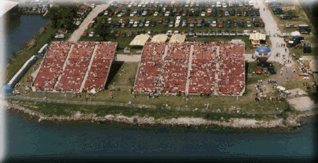

In Waterworks Park Annex (Area #4) we have a relatively new seating area. Here, theater style padded seats make the viewing more comfortable than the bleacher seats in the adjacent Waterworks Park area. The top rows of seating are the highest seats available on the course! Full access to Waterworks Park Hydromart.
These passes are 2-day reserved seats and cost $40 each for rows 1 - 15, and $60 each for rows 16 - 32. Group rates and corporate hospitality tents are also available in this area.
A free Gold Cup Pit Pass is included with every ticket.
For weekend parking information, see the Waterworks Park Parking info.

![[Waterworks Annex Photo]](wwannex1.gif)
 Return to the Ticket Info page.
Return to the Ticket Info page.
All contents Copyright © 1997 Spirit of Detroit THUNDERFEST, except where noted.
Web page created by Brian Reed.
 Return to the Top THUNDERFEST page.
Return to the Top THUNDERFEST page.
All Rights Reserved.